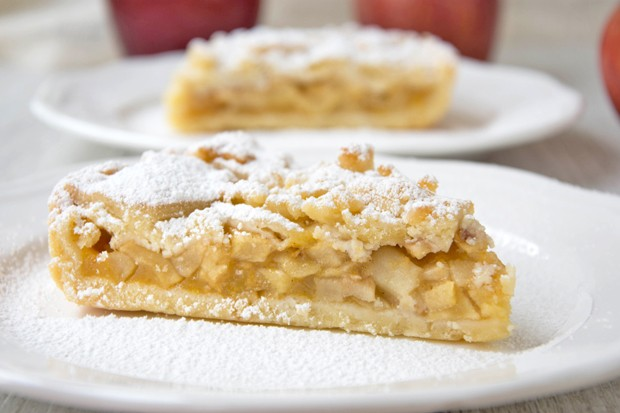

Apfelkuchen mit Apfelmus

Beschreibung
Saftiger Apfelkuchen mit Apfelstücken und Apfelmus-Füllung.
Schmeckt am besten mit selbstgemachtem Apfelmus.
Zutaten
- 150 gramm Zucker
- 150 gramm Butter (Zimmertemperatur)
- 300 gramm Mehl
- 1/2 Pack Backpulver
- 1 Ei
- 1 Pack Vanillezucker
- 2 Äpfel
- 1 Glas Apfelmus
- etwas Zimt nach belieben
Zubereitung
- Alle zutaten für den Teig verkneten
- Form fetten und 2/3 des Teiges für den Boden und den Rand nehmen, Rand nicht bis ganz nach oben ziehen
- Äpfel kleinschneiden, mit Apfelmus mischen und in die Form füllen
- Restlichen Teig krümelig auf der Apfelmusmischung verteilen
- Backen auf 160°C Umluft, 45 Minuten
Zurück zum Index